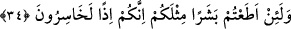
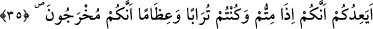

Nuh kıssasındaki gibi âyet “fâ” ile değil “vâv” ile başlamıştır. Çünkü, onların sözü
peygamberlerinin sözüne bitişmemiş, yâni hemen peşinden söylenmemiştir. Bunun
mânâsı, ‘O hak söz ile bu bâtıl söz hâsıl olma bakımından birleşmişlerdir. Aralarında
ise ne kadar fark vardır.
“Bu,” yâni Hûd, beşerî sıfatları ve sözleri bakımından “sadece sizin gibi bir
insandır; sizin yediğinizden yer, içtiğinizden içer” dediler.” Bu söz onun kendilerine
benzediğini belirtmek içindir. Yâni o da sizin gibi gıdaya muhtaçtır. Eğer nebî olsaydı,
meleklerin sıfatlarına sahip olması gerekirdi, yemezdi ve içmezdi.
34. “Gerçekten, sizin gibi bir beşere itâat ederseniz, elbette ziyan edersiniz.”
“Gerçekten,” zikredilen durum ve sıfatlarda “sizin gibi bir beşere itâat ederseniz,”
yâni Allah’a yemin olsun ki eğer onun emirlerini yerine getirirseniz, ona itâat etmeniz
takdirinde “elbette ziyan edersiniz.” Kendinizi zelil kıldığınız için akıllarınızı
kaybeder ve görüşlerinizde aldanmış olursunuz.
Kâşifî der ki: “Ziyâna uğrayanlarsınız. Çünkü Allah tarafından görevlendirilen ve
uyulması istenen peygamberleri kendilerine kıyas ettiniz.”
Onların, kendisinden daha büyük bir hüsran/ziyan olmayan putlara tapmayı değil de
kendilerini iki dünyanın saâdetine ulaştıracak olan peygambere tâbi olmayı ziyân olarak
gördüklerine bir bak! Allah onları kahretsin.
35. “Size, öldüğünüz, toprak ve kemik yığını haline geldiğinizde, mutlak surette
sizin (kabirden) çıkarılacağınızı mı vâdediyor?”
Bu peygamber “Size, öldüğünüz, toprak ve” etleri, sinirleri olmayan eriyip çürümüş
“kemik yığını haline geldiğinizde,” et ve benzerlerinden olan vücudunuz bazı kısımları
toprak ve bazısı da kemik haline geldiğinde “mutlak surette sizin” kabirden daha önce
olduğunuz gibi diri olarak “çıkarılacağınızı mı vaadediyor?”
Toprağın önce zikredilmesi, imkânsız görülmekte asıl olmasından ve görünüp bilinen
cüzlerden dönüşmesindendir. Ya da sizin önce ölenleriniz sırf toprak, sonra ölenleriniz
ise kemik olduğunda, demektir.
Fakîr (Bursevî) der ki: Âşikâr olan şudur ki onların murâdı kendilerinin kemik, sonra
da toprak olduklarını beyan etmektir.